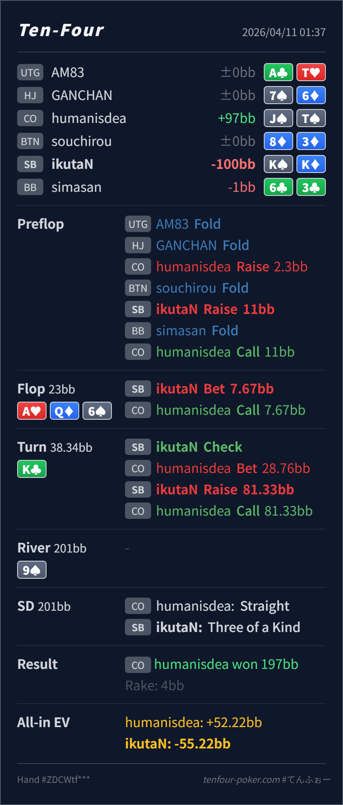

Preflop
良いK♠K♦ は SB からの 3bet で文句なしの上位です。
主論点は、SB の 3bet pot で A♥ Q♦ 6♠ / K♣ に対して CO の flop call range に何が残り、K♠K♦ を turn の bet bucket と check-raise bucket のどちらに置くかです。結論は、preflop 3bet、flop c-bet、turn raise は大筋で自然で、明確な大事故ではありません。いちばん見直すなら turn の最初の check で、K♣ は SB range にかなり良いカードなので、そのまま bet を続ける方が素直です。
K♠K♦J♠T♠A♥ Q♦ 6♠ / K♣ / 9♠K♣ の打ち方です。K♣ は SB 3bet range にとても良いカードで、AA/KK/QQ/AK の密度を大きく押し上げます。CO 側にも JTs, AQ, KQ は残りますが、range 全体では SB が強く出やすい node です。K♠K♦ は turn の top value bucket に入りやすく、まずは bet 継続が素直です。check を選んだあとに大きく bet されてから raise する line も成立しますが、少し回り道になります。K♠K♦J♠T♠2.3BB, SB raise 11BB, CO callA♥ Q♦ 6♠ / K♣ / 9♠7.67BB, CO call28.76BB, SB raise 81.33BB, CO callK, Villain straight
良いK♠K♦ は SB からの 3bet で文句なしの上位です。
A♥ Q♦ 6♠良いK♠K♦ は second pair 強めで、small c-bet に向いた hand です。
K♣やや回り道K♠K♦ は top value bucket で、range 全体としては bet 継続が素直です。
| 論点 | その場で起きがちな見え方 | どこがズレたか | 次回の基準 |
|---|---|---|---|
turn K♣ の扱い | set になったので、check して相手の stab を誘いたくなる | 誘いの発想自体は分かりますが、この card は SB range 全体がかなり強くなる card です。K♠K♦ はその中でも最上位なので、まずは自分から bet を継続して value を取りにいく方がレンジに沿っています。 | range が大きく有利になる turn では、トップ bucket はまず bet 側に置き、check は一部 mix に留める |
| turn raise 後の反応 | JT が完成しているので、raise 自体が危険に見える | JTs は確かにありますが、CO の flop call range 全体で見れば AQ/KQ/AK/QQ/66 などの continue も多く、top set は十分 raise してよい強さです。怖い 1ラインだけで raise を止める必要はありません。 | 完成ストレートがあるか だけでなく、相手の continue range 全体に対して自分がどこにいるかで raise を決める |
| ストリート | その時点の見え方 | 判断の軸 | 評価 | コメント |
|---|---|---|---|---|
| Preflop | CO の open-call range には suited broadway, medium pair, suited connector が中心に残ります。 | K♠K♦ は SB からの 3bet で文句なしの上位です。 | 良い | ここは問題ありません。 |
Flop A♥ Q♦ 6♠ | SB の c-bet range は AA/AK/AQ/KK と broadway bluff を含み、CO は AQ, QJs, JTs, KQ, 66 を中心に continue します。 | K♠K♦ は second pair 強めで、small c-bet に向いた hand です。 | 良い | 7.67BB の c-bet はかなり自然です。 |
Turn K♣ | CO の flop call range には AQ, KQ, JTs, 66, 一部 QJ/AJ が残ります。一方で SB 側は AA/KK/QQ/AK を厚く持っています。 | K♠K♦ は top value bucket で、range 全体としては bet 継続が素直です。 | やや回り道 | check も成立しますが、まずは自分から打つ方が簡潔です。check 後に対する raise 自体は自然です。 |
| River |
check して誘う 発想は悪くありませんが、range 全体が強い node ではまず素直な value bet を基準にした方が整理しやすいです。K♣ のような 3bettor 有利 card では value を取り逃さない素直な bet 継続の方が安定します。